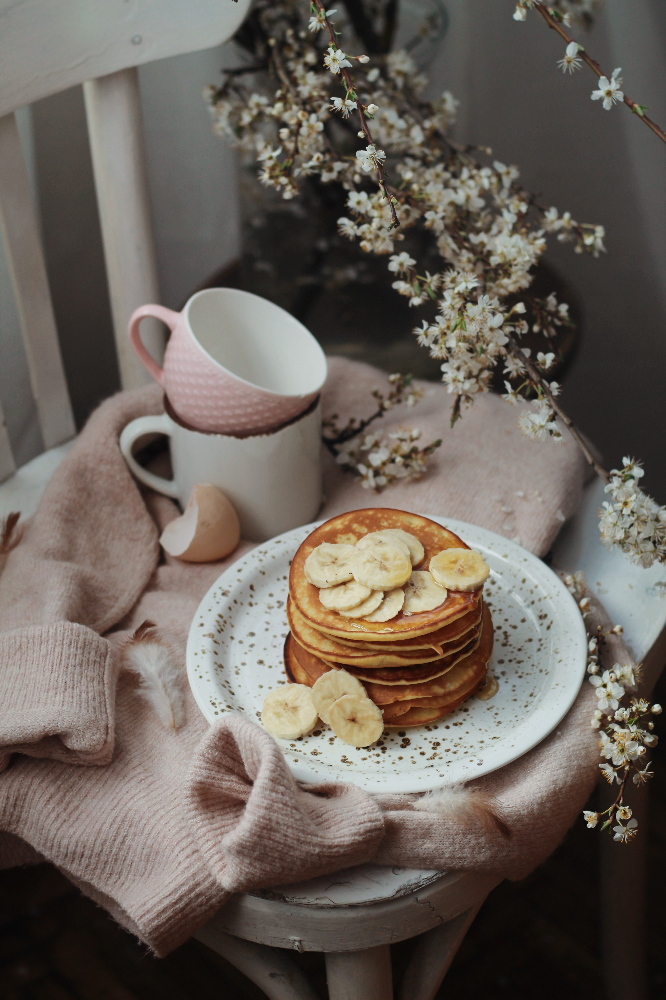

Banana Pancakes

Banana pancakes are a delicious breakfast treat made by combining mashed ripe bananas with pancake batter. They are fluffy, sweet, and often enjoyed with maple syrup, honey, or other toppings of your choice. Here's a simple recipe to make banana pancakes:
Ingredients:
- 1 cup all-purpose flour
- 1 tablespoon granulated sugar
- 2 teaspoons baking powder
- 1/4 teaspoon salt
- 1 ripe banana, mashed
- 3/4 cup milk
- 1 large egg
- 2 tablespoons melted butter or vegetable oil
- Additional sliced bananas (optional, for topping)
- Maple syrup or honey (optional, for topping)
Steps:
- In a mixing bowl, whisk together the flour, sugar, baking powder, and salt.
- In a separate bowl, mix the mashed banana, milk, egg, and melted butter (or oil) until well combined.
- Pour the wet ingredients into the dry ingredients and stir until just combined. Be careful not to overmix; some lumps are okay.
- Preheat a non-stick skillet or griddle over medium heat. If needed, lightly grease the surface with butter or oil.
- Pour about 1/4 cup of the pancake batter onto the hot skillet for each pancake. You can make them smaller or larger, depending on your preference.
- Cook the pancakes until bubbles start to form on the surface, and the edges look set, about 2-3 minutes.
- Flip the pancakes and cook for an additional 1-2 minutes, or until they are golden brown and cooked through.
- Remove the pancakes from the skillet and keep them warm while you cook the remaining batter.
- Serve the banana pancakes with additional sliced bananas on top and drizzle with maple syrup or honey, if desired.
Enjoy your delicious homemade banana pancakes! They are a delightful way to start your day.